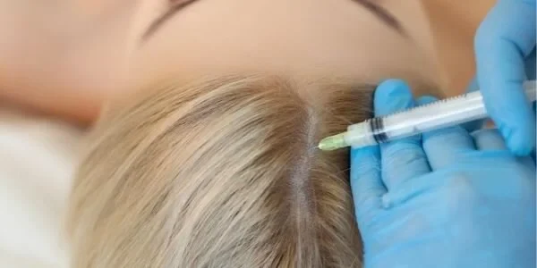

A queda de cabelo é um assunto que assusta homens e mulheres. O cabelo é importantíssimo para a estética e para sexualidade humana. Também é responsável pela diferenciação pessoal, como: colorações, cortes e penteados. Com tamanha relevância na vida das pessoas, a queda de cabelo, quando acentuada, pode afetar a autoestima, satisfação pessoal e a própria percepção de identidade pessoal.
Microagulhamento capilar - Tratamento para queda de cabelo
O microagulhamento, conhecido também como indução percutânea de colágeno por agulhas (IPCA), é um procedimento que consiste em diversas agulhas que perfuram as camadas da pele e do couro cabeludo causando microperfurações que estimulam naturalmente a regeneração da pele, auxiliam na formação de colágeno.
Através dessas microperfurações, realizamos a técnica de drug delivery, que consiste na administração de ativos ou substâncias na pele para facilitar a permeação de acordo com o objetivo e indicação do tratamento.
No couro cabeludo, o microagulhamento auxilia também na saúde dos folículos capilares estimulando o crescimento dos fios, sendo indicado principalmente para o tratamento de alopecia androgenética masculina (calvície) e feminina (caracterizada pelo afinamento do folículo que pode ocorrer no topo da cabeça em pacientes geneticamente predispostas) e algumas quedas de cabelo pontuais, como eflúvio telogeno.

Crescimento capilar através do microagulhamento
O PROCEDIMENTO - Após a limpeza e a anestesia do couro cabeludo, o aparelho de microagulhamento é aplicado no couro cabeludo em várias direções para que se façam os canais no couro cabeludo , onde serão aplicados os ativos do tratamento.
No final do procedimento, o paciente pode apresentar vermelhidão no couro cabeludo que pode durar em média 48 horas e descamação leve na região tratada.
TEMPO TRATAMENTO E NÚMERO DE SESSÕES - A duração do procedimento é de aproximadamente 30 a 40 minutos. O número de sessões depende do grau de acometimento do couro cabeludo, mas, a princípio, são recomendadas três sessões com intervalos de 30 dias.
CUIDADOS APÓS O PROCEDIMENTO:
Não lavar a cabeça no dia do procedimento;
O uso de medicamentos tópicos para a queda de cabelos devem ser suspensos por até 48 horas após o procedimento
Evitar a exposição ao sol da área submetida ao microagulhamento capilar durante o processo inflamatório (2 a 3 dias após o procedimento).

7 Dicas para fortalecer o cabelo
O cuidado com o cabelo desde o início da puberdade ajuda a manter o fio saudável e forte, podendo evitar ou retardar a queda de cabelo.
Confira abaixo dicas e atitudes para manter o cabelo forte e prevenir que eles caiam.
Manter os cabelos limpos;
Não prender os fios quando molhados;
Observe a saúde do couro cabeludo;
Evite o álcool e o fumo;
Cuidado com o estresse, ansiedade e depressão;
Uso moderado de secador de cabelo e chapinha;
Consuma alimentos saudáveis.
Alimentação e o cabelo
De uma forma muito simplificada, as células do cabelo precisam de proteínas, vitaminas e minerais para se manterem fortes e saudáveis, por isso, consumir alimentos abaixo é importante para manter a saúde dos seus fios em dia.
ovo,
peixes,
carne vermelha,
leite,
abacate,
espinafre,
cenoura,
batata-doce ,
feijão e
sementes de chia, linhaça, girassol.
Dermatologista especializada em cabelos
O microagulhamento é um procedimento que deve ser sempre realizado por médicos especialistas e associado ao tratamento clássico, com loções e medicações orais".
Agende sua consulta com a Dra, Flavia Souza.
Agende sua consulta aqui!
Dermatologista Dra. Flavia Souza
Médica especialista em Dermatologia pela Sociedade Brasileira de Dermatologia, com pós-graduação em Dermatologia e Medicina Estética pelo Instituto Pele Saudável/SP. É membro da Sociedade Brasileira de Dermatologia e da Sociedade Brasileira de Cirurgia Dermatológica, além do Grupo Brasileiro de Melanoma e do Colegio Ibero Latinoamericano de Dermatología (CILAD).